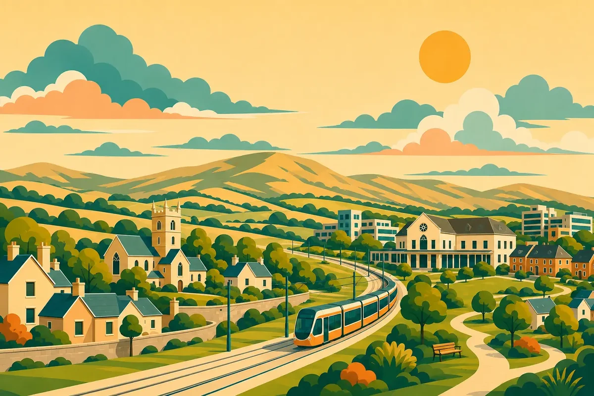
Community connection
S&CT
Saggart & Citywest Together
Helping neighbours find local information, practical supports and ways to connect. A shared resource for a welcoming, informed community.
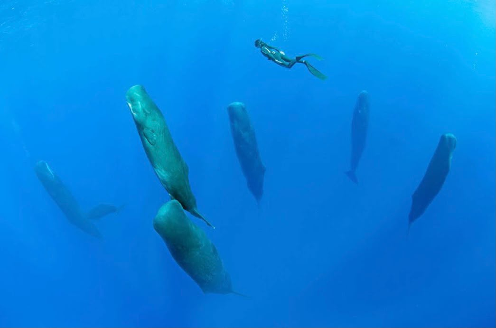
Software and Community Developer based in Dublin, Ireland.
Sam Tim Solutions makes information clearer, connects communities and builds useful digital experiences.
Selected work
Community resources, playful learning and applications built around real interests.

Community connection
Saggart & Citywest Together
Helping neighbours find local information, practical supports and ways to connect. A shared resource for a welcoming, informed community.
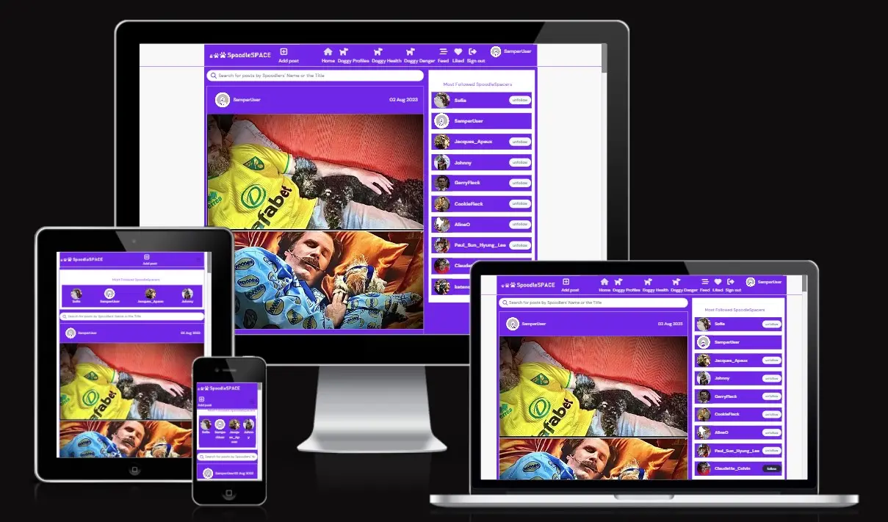
Full-stack application
A social space for people who love dogs. A React interface and Django REST API bring a shared-interest community together.
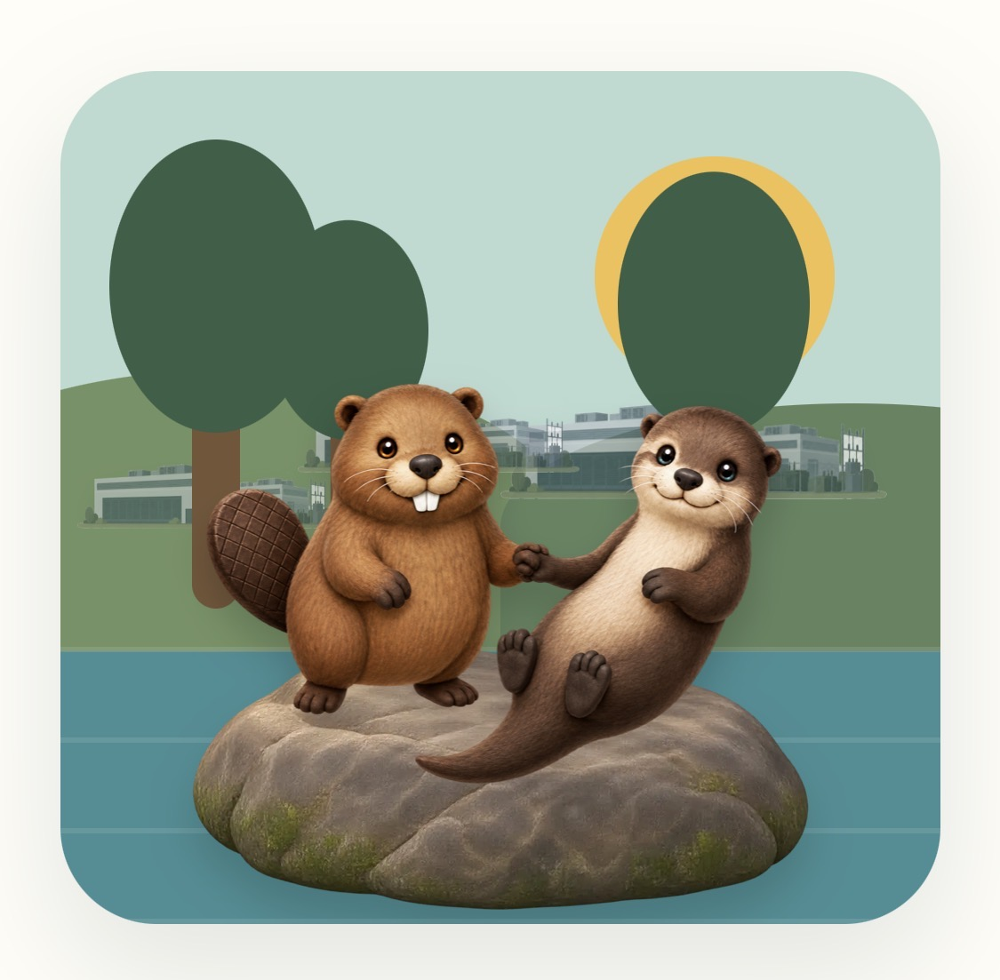
Interactive learning
Two animals. One river. A choice-based game exploring river ecosystems, data centres and how people can protect the water they share.
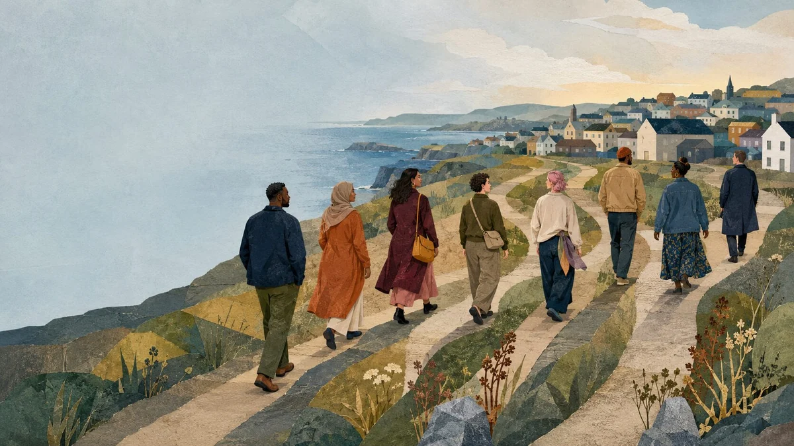
Every journeyLearning resource
Character-based learning about migration, rights and settlement in Ireland.
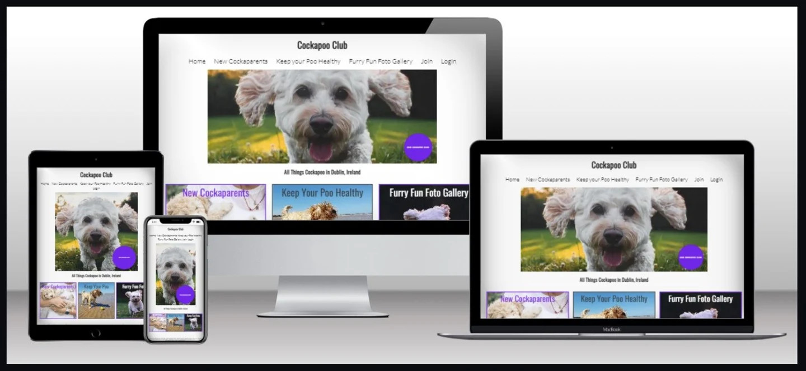
Django application
Dog-care content and a training-booking application for owners and enthusiasts.
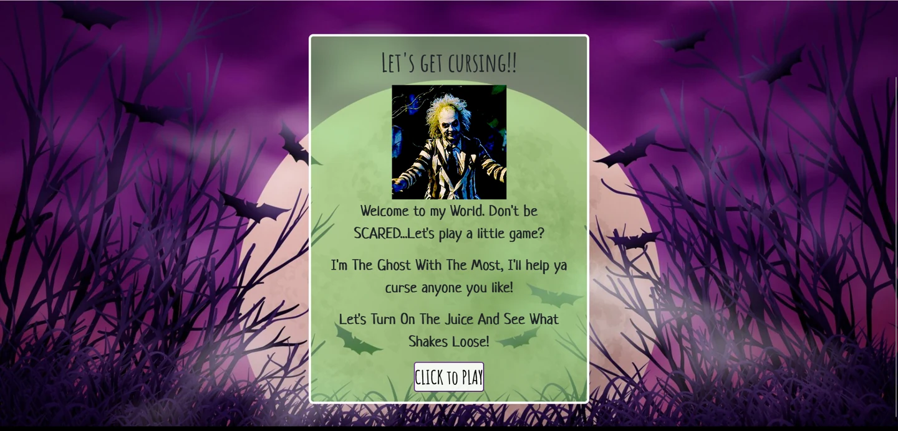
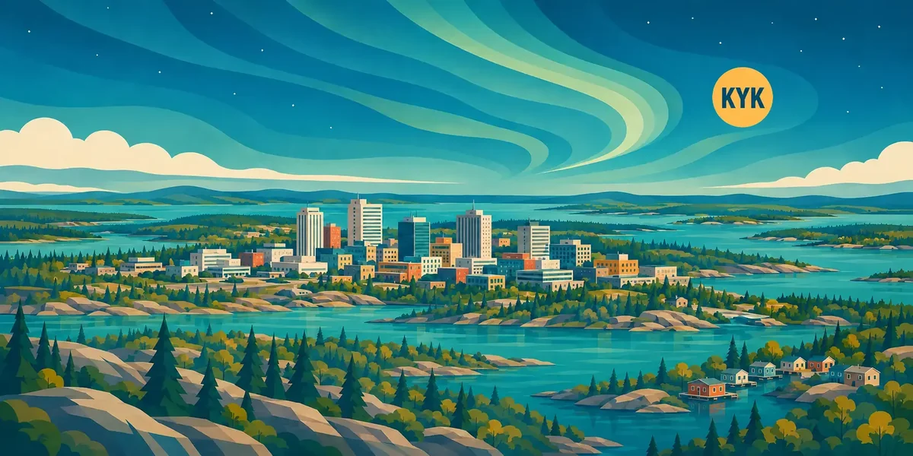
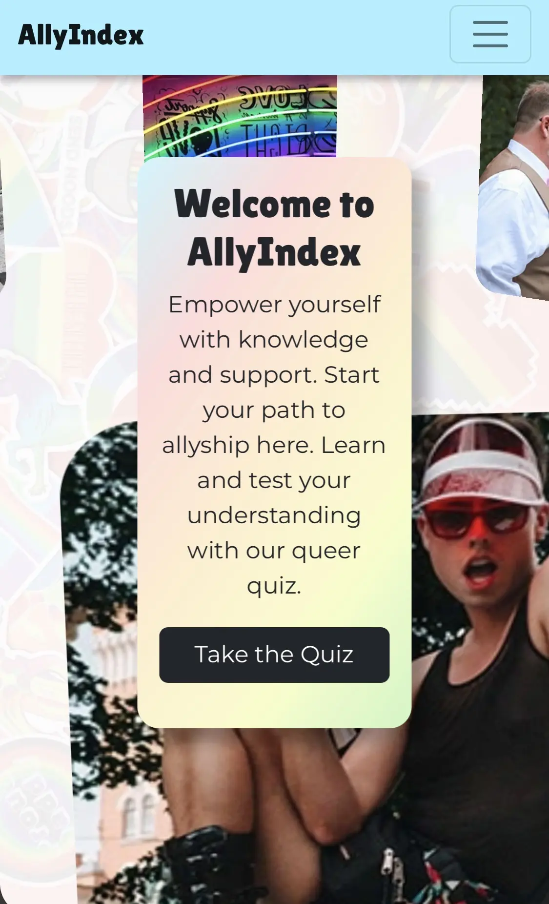
Learning resource
An interactive resource for exploring LGBTQ+ terminology, diverse history and allyship through self-guided learning and a knowledge quiz.
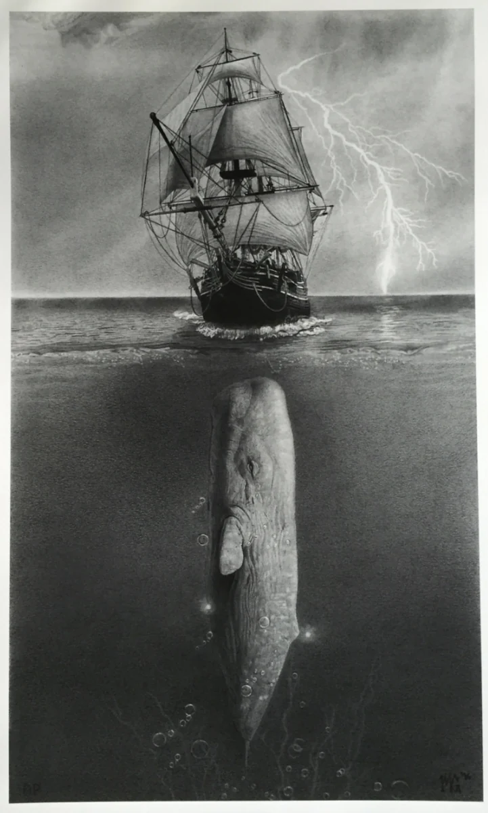
Literary game
A tactical Moby-Dick browser game.
Experience
Software, public service and social research. Different settings, with people at the centre.
Public service
Junior Software Developer at the Department of Social Protection.
Strategy & collaboration
People-first projects and collaboration.
Research & policy
Education, policing, inclusion and social policy.
Research & writing
Research into culture, inclusion and public life still informs how I ask questions and approach digital work.
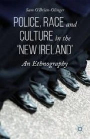
Police, Race and Culture in the ‘New Ireland’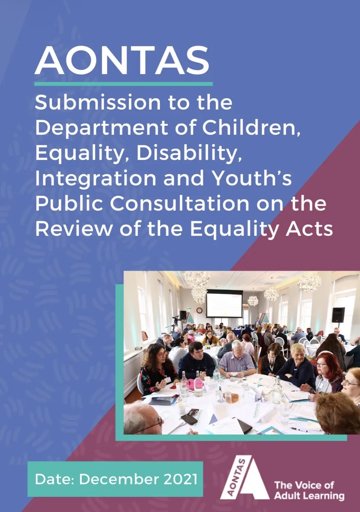
Review of the Equality Acts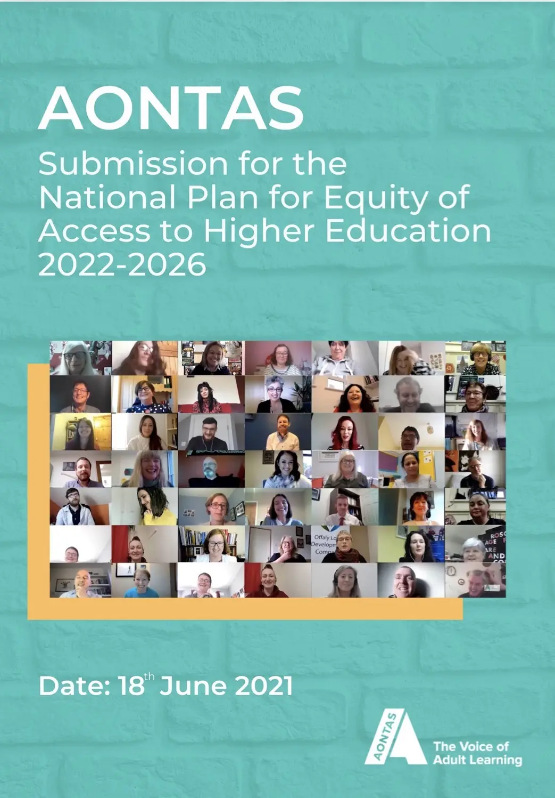
National Plan for Equity of Access to Higher Education 2022–2026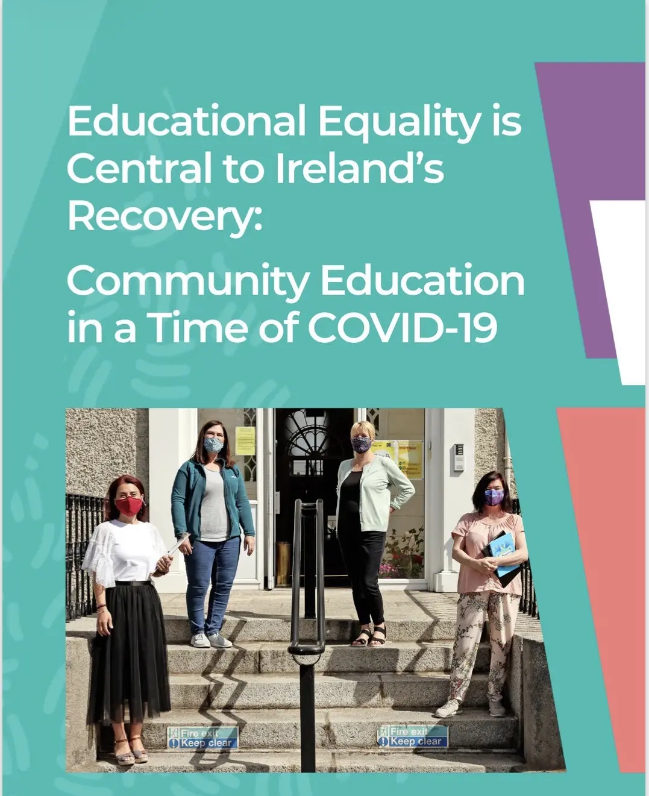
Educational Equality is Central to Ireland's Recovery Elder Abuse, Context and Theory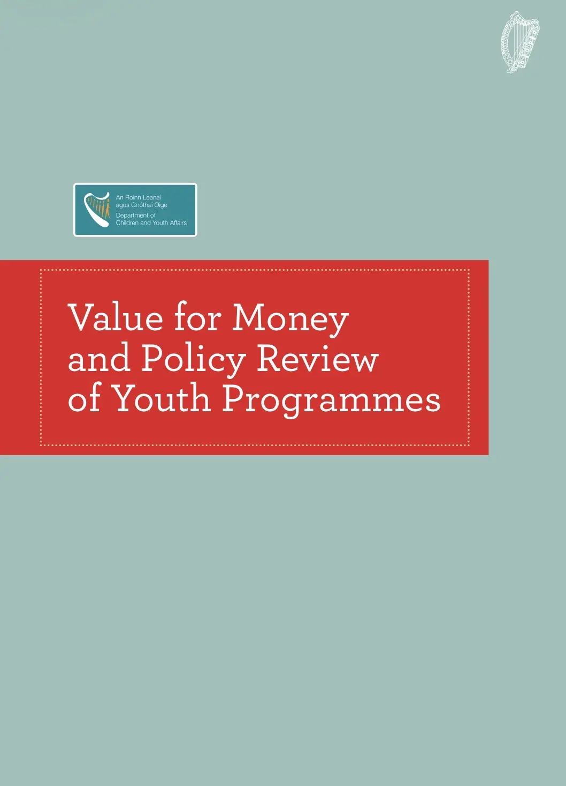
Value for Money and Policy Review of Youth Programmes 2015Age Action Intercultural Care Home ProjectAbout & approach
UnderstandFind the real problem.
SimplifyTranslate knowledge for all.
BuildMake it useful.
I’m Sam, a full-stack developer and social researcher. I’m interested in what happens when technical skills meet a good understanding of people.
My background spans sociology, public policy, education and community development. It shapes how I build: listen carefully, understand the context and make the next step clear.
I work across frontend and backend systems, with accessibility, maintainability and clear communication built into the process.
PhD in SociologyUniversity College Dublin
Diploma in Full Stack Software DevelopmentCode Institute · Advanced Front End
Let’s make something useful
Have a digital project, a research question or a community idea? I’d be glad to hear about it.
Send me an email samobrienolinger@gmail.com{kind=link}
{kind=link}
{kind=link}